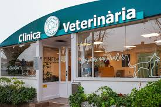

¿Quiénes Somos?
En la Clínica Veterinaria Corazon A, nos dedicamos a brindar atención integral a tus mascotas, combinando experiencia y amor por los animales. .
Reseña Historica de la Clinica
La Clínica Veterinaria Miguel Aquino nació del profundo amor de Miguel por su perro Pocochin, quien fue su fiel compañero durante años. Pocochin, un perro pequeño y alegre, llenaba de energía la vida de Miguel, acompañándolo en sus días buenos y malos. Sinembargo, cuando Pocochin enfermó, Miguel lo llevó a varias clínicas veterinarias, pero no recibió la atención que necesitaba, lo que resultó en la pérdida de su querido amigo. Devastado por su partida, Miguel decidió honrar a Pocochin creando una clínica que garantizara el bienestar de las mascotas. Así nació la Clínica Veterinaria Miguel Aquino, con la misión de brindar atención veterinaria de calidad, basada en el cariño y respeto por los animales. A lo largo del tiempo, la clínica se ha convertido en un lugar de referencia para dueños que buscan atención integral, con un equipo de veterinarios comprometidos en cuidar a cada mascota como Miguel cuidó a Pocochin.
Bibliografía

Hola, soy Miguel Aquino Chahuara, Gerente y veterinario de esta compañia con mas de 5 años de experiencia, graduado de la Universidad Peruana Union - Juliaca. Mi pasión por los animales me ha llevado a especializarme en Cirugia General, gracias a aquellas personas quienes me apoyaron, mi madre Vilma, mi padre Matias, mis hermanas y mis amigos S.Y.B.W.Z.M.A.L.M, etc.
NUESTRO EQUIPO DE TRABAJO
Contamos con un equipo de profesionales altamente capacitados, dedicados a ofrecer el mejor cuidado a tus mascotas.
- Dr y G. Miguel Brandon Aquino Chahuara - (Veterinario General)
- Dr. Lucero Aquino Chahuara - (Especialista en Cirugía)
- Dr. Belen Aquino Chahuara - (Especialista en Dermatología)
- Dr. Carmen Aquino Chahuara - (Especialista en Medicina Interna
- Dr. Susy Aquino Chahuara - (Especialista en Cardiología Veterinaria
- Dr. Brandon Emanuel Mamani Machaca - (Especialista en Nutrición Veterinaria)
- Dr. Adelina Flor Condori Condori - (Especialista en Rehabilitación y Fisioterapia)
- Dr. Sheyla Lis Chirinos Chino - (Especialista en Veterinaria)
- Dr. Yenyfer Taquila Aquino - (Especialista en Oncología Veterinaria)
- Dr. Ruth Shanyra Blanco Lupaca - (Especialista en Auxiliar de Veterinaria)
- Dr. Vanessa Lizeth Apaza Torres - (Especialista en Farmacéutica Veterinario)
- Dr. Mayely Mercedes Quispe Ccoa - (Especialista en Especialista en Animales Exóticos)
Especialidades
- Veterinaria General
- Cirugía General
- Odontología veterinaria
- Dermatología
- Cuidados geriátricos
- Medicina preventiva
- Nutrición Veterinaria
- Medicina Interna
- Rehabilitación y Fisioterapia
- Farmacéutica Veterinaria
- Neurología Veterinaria
- Medicina Felina
- Medicina de Animales de Granja
- Medicina Deportiva y Ortopedia
- Toxicología Veterinaria
- Medicina Preventiva Veterinaria
- Reproducción y Fertilidad Veterinaria
- Medicina Veterinaria de Emergencias y Cuidados Intensivos
- Zooterapia y Bienestar Animal
- Patología Veterinaria
- Anestesiología Veterinaria Avanzada
- Medicina Zoológica
- Medicina Holística Veterinaria
- Genética Veterinaria
La Clínica Veterinaria Miguel Aquino se destaca por ofrecer una amplia gama de especialidades veterinarias, diseñadas para garantizar el bienestar integral de las mascotas. Nuestro equipo de profesionales altamente capacitados brinda atención personalizada en áreas clave como medicina interna, cirugía, dermatología, cardiología, odontología, entre otras. Cada especialidad está orientada a proporcionar diagnósticos precisos, tratamientos efectivos y un cuidado especializado para que cada mascota reciba la mejor atención posible, reflejando nuestro compromiso con su salud y calidad de vida.
Nuestro Motivo a seguir trabajando
Servicios
La Clínica Veterinaria ofrece un excelentes servicio enfocados en el bienestar integral de las mascotas. Nuestro equipo de veterinarios capacitados proporciona atención médica que incluye consultas, diagnósticos, tratamientos especializados en medicina interna, cirugía y dermatología, así como servicios preventivos como vacunaciones y chequeos de salud. También brindamos asesoramiento en nutrición y comportamiento, todo en un ambiente cálido y acogedor. Equipados con tecnología de vanguardia, nos comprometemos a garantizar la salud y felicidad de cada mascota que atendemos.
Consultas Veterinarias
Brindamos atención integral, diagnósticos precisos y ofrecemos consultas veterinarias que incluyen exámenes clínicos completos, diagnóstico de enfermedades mediante pruebas y análisis, administración de vacunas, asesoramiento personalizado sobre nutrición y control de parásitos, así como atención a problemas de comportamiento. También proporcionamos orientación sobre cuidados preventivos, seguimiento de condiciones crónicas, asesoría en salud dental y cuidados geriátricos, todo diseñado para asegurar la salud y bienestar integral de cada mascota que atendemos.
Vacunación
Protegemos a tus mascotas con las vacunas necesarias, ofrecemos un servicio integral de vacunación que incluye la administración de todas las vacunas esenciales para prevenir enfermedades comunes en mascotas, como el parvovirus, moquillo, hepatitis, leptospirosis y rabia, entre otras. Realizamos un seguimiento personalizado del calendario de vacunación adecuado para cada mascota, teniendo en cuenta su edad, historial médico y estilo de vida. Además, proporcionamos información sobre la importancia de la vacunación y cómo contribuir al bienestar general de la comunidad animal, asegurando así la protección de su mascota y la prevención de brotes de enfermedades en la población.
Emergencias
Atención de urgencias las 24 horas, los 7 días de la semana y nuestro equipo de veterinarios capacitados está preparado para manejar una amplia variedad de urgencias, como traumatismos, dificultad para respirar, intoxicaciones, convulsiones y problemas gastrointestinales. Contamos con tecnología avanzada para diagnósticos rápidos y precisos, así como con el equipamiento necesario para realizar procedimientos de estabilización y tratamiento. Nos comprometemos a actuar con rapidez y eficacia para garantizar la salud y bienestar de su mascota en momentos de crisis.
Baño y Peluquería
Servicios de grooming para mantener a tu mascota limpia y saludable, ademas ofrecemos un servicio de baño y peluquería tanto para mascotas como para sus dueños, brindando una experiencia completa de cuidado y bienestar. Nuestros servicios incluyen baños con productos específicos para cada tipo de pelaje, corte y estilizado, así como tratamientos de hidratación y cuidado de la piel. Para los dueños, ofrecemos un espacio cómodo y relajante, donde pueden recibir asesoría sobre el cuidado del pelaje de sus mascotas mientras disfrutan de un servicio de peluquería personalizado. Nuestro equipo está capacitado para garantizar que tanto las mascotas como sus dueños se sientan frescos, limpios y mimados, en un ambiente acogedor y profesional.